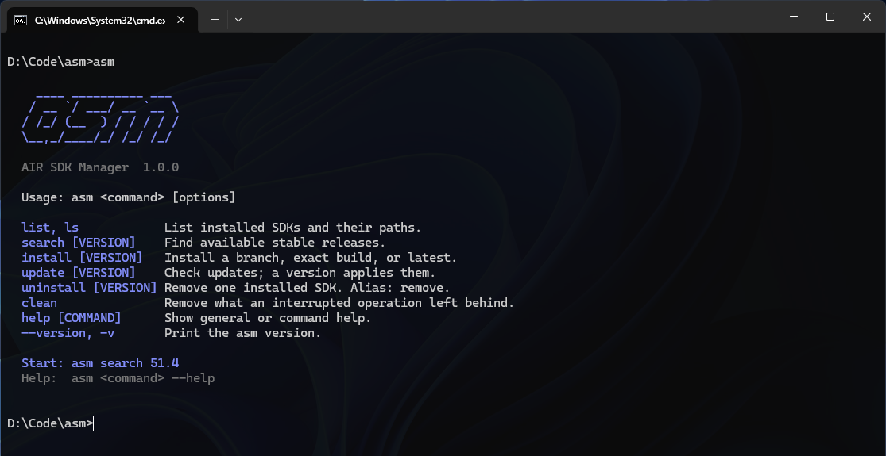

The AIR SDK Manager, in your terminal.
Install, update, and remove AIR SDK builds on Windows, macOS, and Linux. One native binary — no Go, no PowerShell, no runtime to install first.
irm https://raw.githubusercontent.com/emptyenemy/asm/main/install.ps1 | iex
The installer verifies the download against the release's SHA256SUMS, adds the binary to your user PATH, and refuses to overwrite an unrelated command called asm. Add -NoPath to keep your shell configuration untouched.
curl -fsSL https://raw.githubusercontent.com/emptyenemy/asm/main/install.sh | sh
The installer verifies the download against the release's SHA256SUMS and adds ~/.local/bin to the profile of the shell it detects. Add ASM_NO_PATH=1 to keep your shell configuration untouched.

What it saves you
Nothing to install around it
A single executable. No package manager, no runtime, no admin rights: the installer writes to your user directory and your user PATH.
It uses the settings you already have
Reads ~/.airsdk/airsdkmanager.cfg from the AIR SDK Manager and never rewrites your settings or its database. Your SDK folder stays where it is.
A dropped connection is not a lost download
The transfer resumes from the bytes already on disk and retries with a backoff, and every archive is checked against its published SHA-256 before it is unpacked.
Recovery after a hard kill
Close the terminal mid-install and something is left behind. asm clean finds it, puts a half-replaced SDK back, and reports what it freed.
Commands
asm search [VERSION]List announced stable releases, newest first.
asm install [VERSION]Install a branch such as 51.4, an exact build, or latest.
asm listList installed SDKs and their absolute paths. Alias: ls.
asm update [VERSION]Update installed SDKs. --check previews, --all covers every one.
asm uninstall [VERSION]Remove one installed SDK. Alias: remove.
asm cleanRemove what an interrupted operation left behind. --check only reports.
Square brackets mark a value you supply. asm help COMMAND explains any of them, and asm install --help works too.
Configuration
asm reads the same file the AIR SDK Manager writes. Point AIR_SDKS at the folder that holds your SDKs, and record that you have accepted the AIR SDK license.
# ~/.airsdk/airsdkmanager.cfg AIR_SDKS=C:\AIRSDK HAS_ACCEPTED_LICENSE=true
Without that setting, pass --accept-license to a single install or update. The flag applies to that operation only and changes nothing on disk.
What it will not do
- Windows on ARM is not supported. There is no native Windows ARM64 AIR SDK, so the installer stops with that message instead of installing a build that could not install an SDK.
- Installing an SDK needs an accepted AIR SDK license. asm manages AIR SDKs; the SDK itself is licensed by HARMAN.
- Downloading a real SDK has not been verified on every host yet. The command set, the configuration handling and the assembly of an SDK are covered by fixture tests, but the live service is a separate question — please report what breaks.